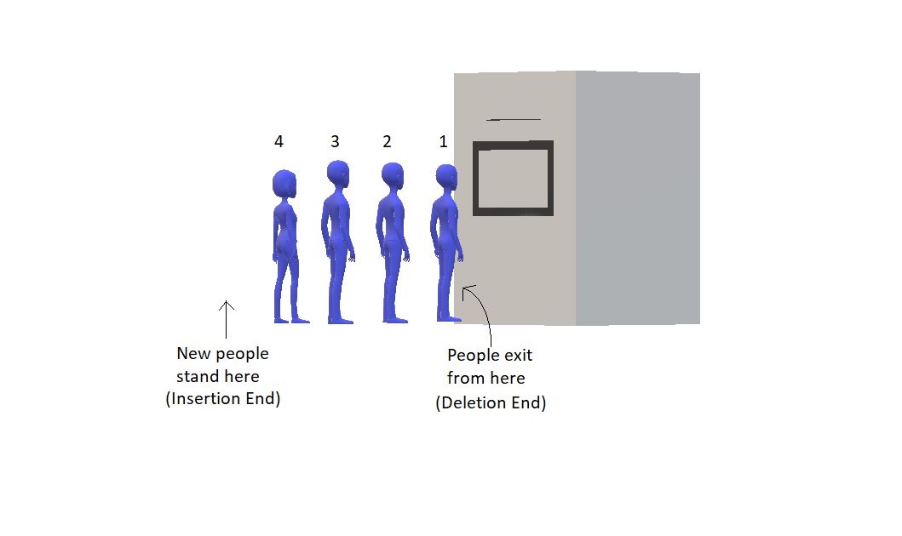
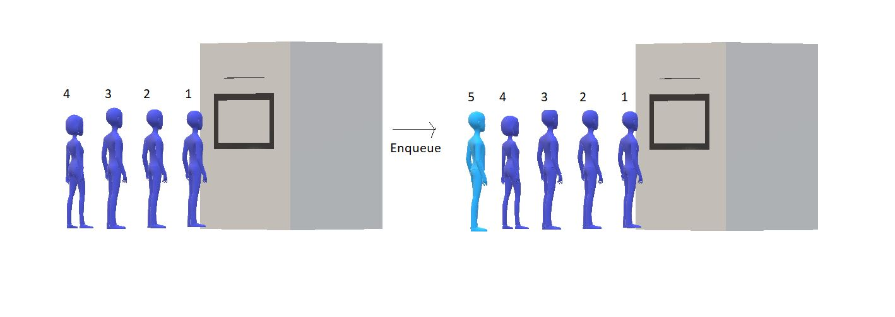
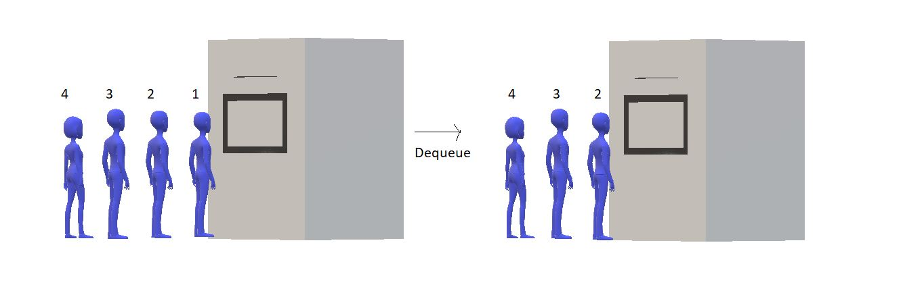
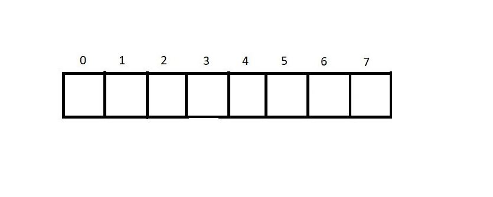
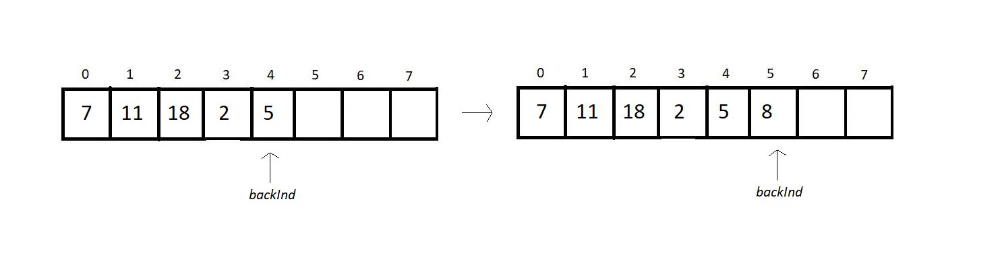
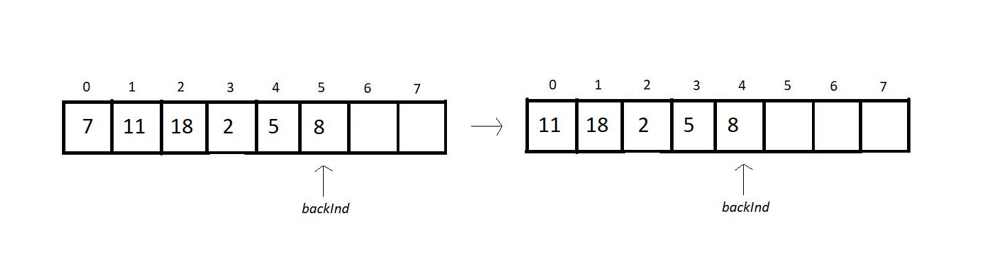
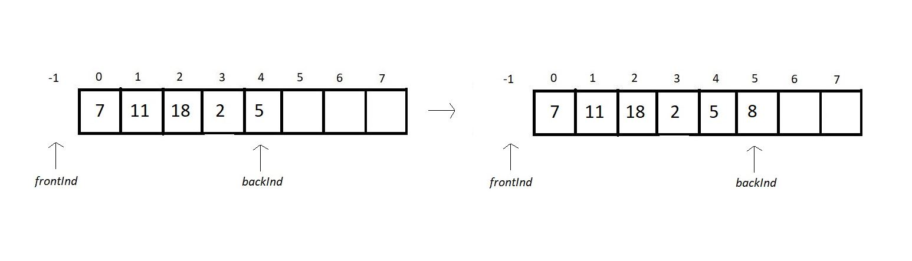
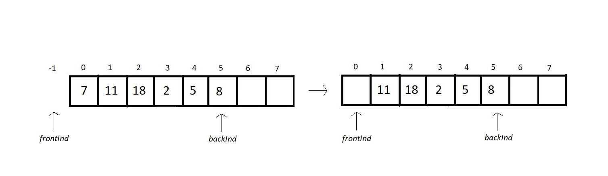

Queue as an English word must be a well-known thing to you. We stand in a queue while waiting for our turn to come. Indian railway is one of the places where people stand in a long queue, waiting for their chance to buy a ticket. One important thing to
observe, which is quite intuitive, is that your chance comes first when you come first in the queue. And the people standing last, who have joined the queue last, get to buy the ticket in the end.
Unlike stacks, where we followed LIFO( Last In First Out ) discipline, here in the queue, we have FIFO( First In First Out). Follow the illustration below to get a visual understanding of a queue.

In stacks, we had to maintain just one end, head, where both insertion and deletion used to take place, and the other end was closed. But here, in queues, we have to maintain both the ends because we have insertion at one end and
deletion from the other end.
Data:
In order to create a queue, we need two pointers, one pointing to the insertion end, to gain knowledge about the address where the new element will be inserted to. And the other pointer pointing to the deletion end, which holds
the address of the element which will be deleted first. Along with that, we need the storage to hold the element itself.
Methods:
Here are some of the basic methods we would want to have in queues:
1. enqueue() : to insert an element in a queue.

2. dequeue(): to remove an element from the queue

3. firstVal(): to return the value which is at the first position.
4. lastVal(): to return the value which is at the last position.
5. peek(position): to return the element at some specific position.
6. isempty() / isfull(): to determine whether the queue is empty or full, which helps us carry out efficient enqueue and dequeue operations. This was our abstract data type, queue. We have in this what we thought would suffice
our needs for now. The list could be longer, but in my opinion, this is sufficient.
A queue can be implemented in a number of ways. We can use both an array and a linked list and even a stack, and not just that, but by any ADT.
A queue is a collection of elements with certain operations following FIFO (First in First Out) discipline. We insert at one end and delete from the other. And this is what you have to keep in mind for now.
Assuming that we have 8 people and we want to store their information, we’ll have an array as illustrated below:

Here, we’ll maintain an index variable, backInd, to store the index of the rearmost element. So, when we insert an element, we just increment the value of the backInd and insert the element at the current backInd value. Follow the
array below to know how inserting works:

Now suppose we want to remove an element from the queue. And since a queue follows the FIFO discipline, we can only remove the element at the zeroth index, as that is the element inserted first in the queue. So, now we will remove
the element at the zeroth index and shift all the elements to its adjacent left. Follow the illustrations below:

But this removal of the zeroth element and shifting of other elements to their immediate left features O(n) time complexity.
Summing up this method of enqueue and dequeue, we can say:
1. Insertion( enqueue ):
To implement this, we’ll use a structure and have the following members inside it:
1. size: to store the size of the array
2. frontInd: to store the index prior to the first element.
3. backInd: to store the index of the rearmost element.
4. *arr: to store the address of the array dynamically allocated in heap.
struct queue
{
int size;
int frontInd;
int backInd;
int* arr;
};
Now to use this struct element as a queue, you just need to initialize its instances as:
struct Queue q; (we are not dynamically allocating q here for now, as we did in stacks).
Use dot here, and not arrow operator to assign values to struct members, since q is not a pointer.
q.size = 10; (this gives size element
the value 10) q.frontInd = q.backInd = -1;(this gives both the indices element the value -1)
Use malloc to assign memory to the arr element of struct q. And this is how you initialize a queue. We will now devote our attention to two
important operations in a queue: enqueue and dequeue.
Enqueue
Enqueue: Enqueuing is inserting a new element in a queue. Prior to inserting an element into a queue, we need to take note of a few points.
First, check if the queue is already not full. If it is, it is the case of queue overflow, else just increment backInd by 1, insert the new element there. Follow the illustration below.

Dequeue:
Dequeuing is deleting the element in a queue which is the first among all the elements to get inserted. Prior to deleting that element from a queue, we need to follow the below-mentioned points:
3. First, check if the queue is already not empty.
4. If it is, it is the case of queue underflow, else just increment frontInd by 1. In arrays, we don’t delete elements; we just stop referring to the element. Follow the illustration below.

Condition for isEmpty:
If our frontInd equals backInd, then there is no element in our queue, and this is the case of an empty queue.
Condition for isFULL:
If our backInd equals (the size of the array) -1, then there is no space left in our queue, and this is the case of a full queue.
So, there are the basic operations of a queue. We have omplemented everythin using arrays.
1. First of all, start by creating a struct named queue, and define all of its four members. An inter variable size to store the size of the array, another interger variable f to store the front end index, and an integer variable r to store the index of the rear end. Then, define an integer pointer arr to store the address of the dynamically allocated array.
struct queue
{
int size;
int f;
int r;
int* arr;
};
2. In main
struct queue q;
q.size = 4;
q.f = q.r = -1;
q.arr = (int*) malloc(q.size*sizeof(int));
3. Creating Enqueue:
void enqueue(struct queue *q, int val){
if(isFull(q)){
printf("This Queue is full\n");
}
else{
q->r++;
q->arr[q->r] = val;
printf("Enqued element: %d\n", val);
}
}
4. Creating isFull:
int isFull(struct queue *q){
if(q->r==q->size-1){
return 1;
}
return 0;
}
5. Creating Dequeue:
int dequeue(struct queue *q){
int a = -1;
if(isEmpty(q)){
printf("This Queue is empty\n");
}
else{
q->f++;
a = q->arr[q->f];
}
return a;
}
6. Creating isEmpty:
int isEmpty(struct queue *q){
if(q->r==q->f){
return 1;
}
return 0;
}
#include<stdio.h>
#include<stdlib.h>
struct queue
{
int size;
int f;
int r;
int* arr;
};
int isEmpty(struct queue *q){
if(q->r==q->f){
return 1;
}
return 0;
}
int isFull(struct queue *q){
if(q->r==q->size-1){
return 1;
}
return 0;
}
void enqueue(struct queue *q, int val){
if(isFull(q)){
printf("This Queue is full\n");
}
else{
q->r++;
q->arr[q->r] = val;
printf("Enqued element: %d\n", val);
}
}
int dequeue(struct queue *q){
int a = -1;
if(isEmpty(q)){
printf("This Queue is empty\n");
}
else{
q->f++;
a = q->arr[q->f];
}
return a;
}
int main(){
struct queue q;
q.size = 4;
q.f = q.r = 0;
q.arr = (int*) malloc(q.size*sizeof(int));
// Enqueue few elements
enqueue(&q, 12);
enqueue(&q, 15);
enqueue(&q, 1);
printf("Dequeuing element %d\n", dequeue(&q));
printf("Dequeuing element %d\n", dequeue(&q));
printf("Dequeuing element %d\n", dequeue(&q));
enqueue(&q, 45);
enqueue(&q, 45);
enqueue(&q, 45);
if(isEmpty(&q)){
printf("Queue is empty\n");
}
if(isFull(&q)){
printf("Queue is full\n");
}
return 0;
}